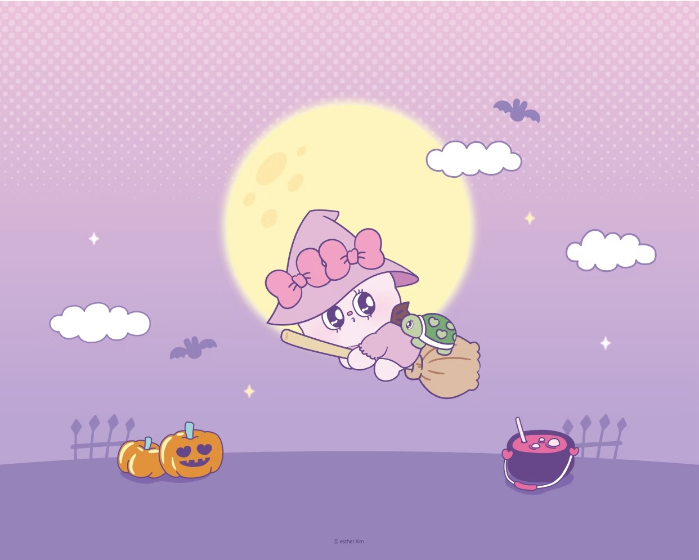

开场白
我不太想把自己包装成一个“什么任务都能做好”的人。
我更希望这份说明书能让别人知道：我擅长什么、什么情况下我会发挥得比较好、我什么时候容易卡住，以及如果我们之后真的一起做事，怎样合作会比较舒服。

我不太想把自己包装成一个“什么任务都能做好”的人。
我更希望这份说明书能让别人知道：我擅长什么、什么情况下我会发挥得比较好、我什么时候容易卡住，以及如果我们之后真的一起做事，怎样合作会比较舒服。
我是想想，很高兴认识你 ♡
这张海报上的每个小角落都可能藏着一张卡片——月亮、云朵、小乌龟、南瓜……慢慢逛，你会更完整地认识我。
想想｜中山大学｜俄语专业｜大四
我现在还是一个语言专业的学生，但我越来越不想把自己的身份只定义成“俄语专业”。
俄语是我目前比较明确的一项能力，但过去一段时间里，我一直在尝试把它和其他东西连接起来：海外市场、用户观察、内容、AI工具、信息搜集，以及一些自己感兴趣的产品和创意。
如果一定要给现在的自己一个定位，我更愿意说：
一个还在探索方向，但已经开始主动搭建自己能力组合的学生。
我目前还没有一个非常确定的职业身份，这反而是我参加这个项目的原因之一。
我以前已经陆陆续续用 AI 做过一些事情。
比如用 AI 辅助做过市场调研、网站、视觉内容，也用 AI 帮助自己整理新闻、准备面试和分析问题。
但这些事情比较像一个个独立的小实验。
我发现自己真正缺的，不只是“会不会用 AI”，而是：
能不能把 AI 变成一种稳定的工作方式，并且真的拿它完成一个有明确目标、有协作、有交付的项目。
所以我参加北辰青年，不只是想学几个新的 AI 工具。
我更想体验一次真实的项目协作：从接到任务、理解需求，到自己做判断、调用 AI、和别人沟通、接受反馈，再把东西交付出来。
另外，我也希望通过这个过程看看：
我到底更适合什么样的工作，以及我现在这些看起来比较零散的兴趣和能力，能不能慢慢形成一个有方向的组合。
我希望最后留下的不是一个“看起来很厉害”的成果，而是一套我以后还能继续使用的东西。
具体来说，我希望有：
如果 4 周之后，我能说：
“以前我只是会让 AI 帮我做东西，现在我知道怎么和 AI 一起把一件事情做完了。”
那我觉得这个项目对我来说就有意义。
这是我目前比较有把握的一类任务。
我做过海外市场相关的信息搜集，也做过市场研究、俄语新闻阅读和资料整理。相比于只接收别人已经整理好的信息，我比较喜欢自己去找资料，再判断哪些值得留下。
我比较擅长的不是“搜很多”，而是：
从比较散的信息里找到重点，再重新组织成一个能被别人看懂的结构。
我对“人为什么会这样想、为什么会这样选择”比较感兴趣。
之前做过问卷、实验参与者招募，也参与过大创实验项目。平时我自己也比较喜欢观察人的行为和关系，经常会追问一个现象背后的原因。
所以如果任务涉及：
这类任务我会比较有兴趣。
我比较喜欢从一个还没有完全成型的想法开始，把它慢慢具体化。
比如一个产品想法、一个网站、一个内容主题，我通常不会一开始就知道最终应该长什么样，而是会经历：
有一个模糊想法 → 找资料 → 和 AI 讨论 → 发现原来的想法不对 → 修改 → 再继续往下做。
所以我比较适合参与前期的：
这是我最近比较主动培养的一项能力。
我不会把 AI 当成“替我完成任务的人”，更像是把它当成一个可以不断讨论的协作者。
比如我做市场研究时，会让不同 AI 分别承担资料搜索、分析、结构梳理和网站制作等工作；做视觉项目时，也会先让 AI 帮我分析，再根据结果生成提示词。
我比较习惯的方式是：
AI 先给可能性 → 我判断 → 我修改 → AI继续执行。
所以我希望自己未来能够进一步形成自己的 AI 工作流，而不是单纯积累“用过哪些工具”。
我比较在意表达是不是自然、是不是像人说的话。
有时候我宁愿多改几遍，也不太愿意直接使用一个“听起来很正确，但其实很空”的版本。
我的优势可能不是写得特别快，而是比较容易发现：
“这句话虽然没错，但不像我，也不像真实的人会说的话。”
能够完成日常的信息整理、表格整理和基础 PPT 内容搭建。
但这不是目前我最突出的能力，所以如果任务特别依赖专业的数据建模或复杂的数据分析，我不会把自己放在最优先的位置。
如果把目前的能力浓缩一下，我觉得比较适合我的关键词是：
信息搜集｜用户观察｜内容整理｜创意发散｜AI协作
我曾经做过比较有代表性的事情，是在海外市场实习期间搜集潜在客户信息，也做过市场研究和 EDM 内容相关工作。
另外，我自己也尝试过用 AI 做市场调研网站、产品创意和视觉内容。
这些事情看起来不完全属于同一个领域，但它们有一个共同点：
我喜欢从一个模糊的问题出发，自己找信息，再一点点把它变得具体。
我现在比较欠缺的是：
所以我希望自己不是只停留在“想法很多”，而是慢慢变成一个能把想法真正交付出来的人。
比较容易让我进入状态的任务通常有这些特点：
尤其是当我觉得：
“这件事情真的有点意思，而且做完以后我能带走点什么。”
我的动力会明显高很多。
我比较容易卡住的情况不是“任务很难”，而是：
任务既模糊，又没有判断标准，但又希望我直接交一个完成版。
比如只告诉我：
“你自己发挥一下。”
如果没有目标、对象、案例或者至少一个大致的判断标准，我可能会开始想很多种可能性，反而不知道应该先做哪一种。
另外，如果一个任务的信息非常分散，或者过程中不断改变方向，我也容易重新进入“重新思考”的状态。
所以对我来说比较好的方式是：
先让我知道方向和边界，再让我自由发挥。
我最希望知道：
如果有参考案例，我通常会更容易进入状态。
我不需要别人把每一步都规定好。
相反，我比较喜欢：
目标清楚、边界清楚，但中间的做法可以自己决定。
我比较适合：
关键节点同步，而不是每做一步都汇报。
例如：
接到任务 → 理解需求 → 做出第一版 → 同步 → 根据反馈修改 → 最终交付。
如果遇到明显影响进度的问题，我会倾向于先自己整理一下，再主动说。
我通常会先自己查资料、想办法。
如果自己解决不了，我比较希望带着一个具体的问题来问，而不是直接说：
“我不会。”
例如：
“我现在有 A 和 B 两种方案，但不知道哪个更符合这次任务的目标，我倾向于 A，原因是……你觉得哪个方向更合适？”
这种沟通方式对我来说比较有效。
如果负责人能直接告诉我：
“现在最重要的问题是这个，先别管其他的。”
我会比较容易继续往下推进。
我比较不适应：
我比较适合：
目标清楚 → 自己做第一版 → 中途确认一次 → 根据反馈继续优化。
我不太需要很多泛泛的“你做得很好”。
如果可以的话，我更希望别人具体告诉我：
因为具体的反馈对我下一次做事情更有帮助。
我比较能接受直接指出问题。
甚至相比：
“整体不错，再丰富一点。”
我更希望听到：
“现在最大的问题是 X，因为 Y，所以建议先改 Z。”
对我来说比较有用的反馈结构是：
问题在哪里 → 为什么 → 哪个是必须改的 → 可以怎么改。
如果还有参考案例，我会更容易理解。
我一般会先把反馈拆开：
必须修改 → 建议优化 → 可以以后再做
然后先解决最影响结果的问题。
我也比较习惯在修改之后再回头看：
“为什么我第一次没有想到这个？”
如果这个问题以后还会出现，我会希望把它变成自己的检查清单，而不是只修改这一次。
我压力大的时候不一定会直接表现成“什么都不做”。
有时候反而会：
想很多、查很多、改很多，但真正提交得比较慢。
尤其当我很在意一件事情的时候，我容易不断确认：
“这样是不是不够好？”
“是不是还有更好的方向？”
“是不是应该再改一下？”
所以有时候真正的问题不是没有行动，而是：
思考和优化超过了实际推进的速度。
如果发现我卡住了，比起一直催我：
“怎么还没交？”
更有效的是问：
“你现在最卡的是哪一步？”
然后把任务拆成一个更小的动作。
比如：
“先别管最终版，今天先把框架交出来。”
这种提醒对我比较有效。
比较容易让我更焦虑的方式是：
我比较适合：
先有一个能跑起来的版本，再不断优化。
我开始做一件事情前，最需要知道：
如果有参考案例，我也会很欢迎。
因为我可以自己搜索很多信息，但如果连“我要解决什么问题”都不知道，搜索越多反而越容易跑偏。
对我来说比较有帮助的资源包括：
尤其是 AI。
我比较习惯根据任务选择不同工具，而不是所有事情都交给同一个 AI。
例如：
搜索 / 研究 → 分析整理 → 内容生成 → 网站或视觉制作
可以让不同工具分别承担比较适合自己的部分。
我比较适合：
先明确目标 → 拆出第一步 → 先交一个初稿 → 获得反馈 → 再优化。
我不太适合一开始就要求自己直接做出最终版。
因为很多时候，我只有真正做出第一版之后，才会知道：
“原来我真正想做的是这个。”
所以对我来说，“先做出来”本身就是思考过程的一部分。
如果以后真的一起做项目，我觉得我比较能提供的是：
信息搜集 + 用户观察 + 内容整理 + 创意讨论 + AI协作
我也愿意做一些别人可能觉得比较琐碎、但决定最后结果质量的事情，比如资料整理、信息核对、结构调整和复盘。
我比较希望自己不是只负责一个孤立的小环节，而是能够理解：
“我们为什么要做这件事。”
这样我会更容易主动发现问题。
我比较适合：
① 前期调研类
资料搜集、用户观察、竞品信息整理、访谈/问卷信息整理。
② 内容策划类
选题、内容框架、文字初稿、信息结构梳理。
③ AI 协作类
根据任务选择 AI 工具、设计提示词、让 AI 辅助研究/整理/创作，再人工筛选和修改。
目前不太适合让我单独负责：
不是说这些事情我以后不会做，而是目前如果团队需要效率，最好不要默认我是这些任务的最佳人选。
如果要和我合作，我觉得最重要的其实只有几件事：
告诉我为什么做。
告诉我最后要交什么。
告诉我什么时候要。
如果方向不对，尽早告诉我。
不要把“你自己发挥”当成完整需求。
另外，如果我一直在修改而没有提交，可以提醒我：
“先交一个版本。”
这句话对我可能很有用。
我现在还没有完全想清楚自己未来一定要成为什么样的人。
但我比较确定的是，我不想只是为了完成任务而完成任务。
我希望自己做的事情能够让我真正学到一点东西，也希望在一个团队里，我不仅是一个“接到任务然后完成的人”，而是能够理解问题、提出自己的判断，并且把事情往前推进的人。
这 4 周里，我希望自己可以认真经历一次完整的项目过程：
接任务 → 理解问题 → 和 AI 协作 → 自己判断 → 和队友沟通 → 接受反馈 → 修改 → 交付。
如果最后留下的不只是一个作品，而是我真的知道：
“以后遇到一个陌生任务，我知道该怎么开始了。”
那可能就是我这次参加北辰青年最大的收获。
这份说明书不是 AI 直接替我写出来的。
我让 AI 帮我回顾和整理过去一段时间的对话，从中寻找一些我自己平时不一定会主动总结出来的特点。
AI 帮我做的是：
提取 → 归纳 → 找规律 → 提出可能的表达。
但我会继续判断：
“这到底是不是我？”
如果只是听起来正确、但不像我的话，我会删掉或重写。
所以这份说明书里，我更看重的不是 AI 帮我写得多漂亮，而是：
AI 帮我看见了一些东西，而最后怎么定义自己，还是由我自己决定。